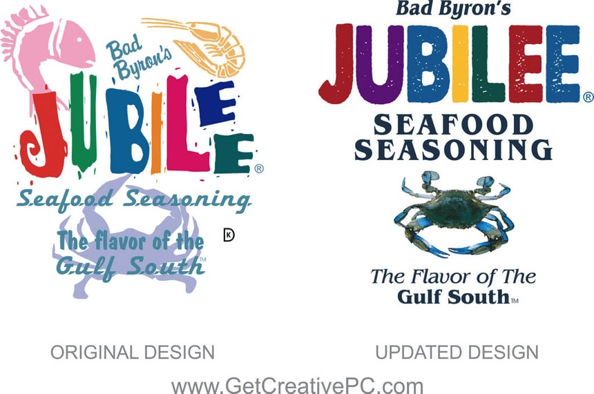
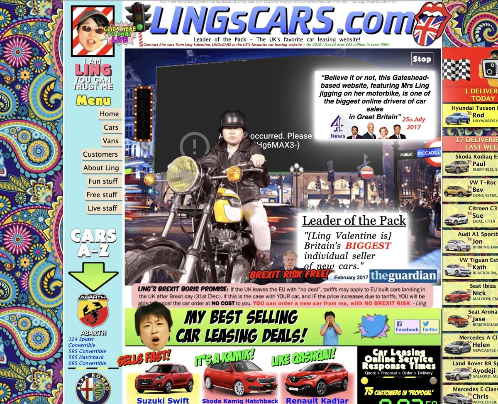
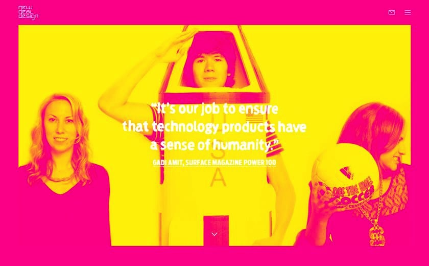

Color/Contrast: Het contrast is verhoogd door de kleuren donkerder en meer verzadigd (saturation) te maken.
White Space: Elementen zijn niet meer gelaagd, dus over elkaar heen, maar onder elkaar geplaatst. Er is weinig witruimte, dus dat zou nog beter kunnen, maar het geheel is wel gebalanceerd.
Visual Hierarchy: Elementen zijn gecentreerd en onder elkaar geplaatst. Dat geeft een rustiger beeld.
Complexity/Simplicity: Door minder lettertypen te gebruiken wordt het ontwerp eenvoudiger.
Consistency: Minder lettertypen en stijlen leest makkelijker, de elementen zijn gecentreerd en het geheel geeft een consistenter beeld.
Scale: De belangrijkste tekstelementen zijn het grootst. Ik lees heel snel JUBILEE en dan SEAFOOD SEASONING, de kern van de boodschap.

Design 2
Ling’s Cars
Color/Contrast: Veel te veel kleur.
White Space: Er is geen gebruik gemaakt van witruimte.
Visual Hierarchy: Complete chaos. Je weet niet waar je moet kijken.
Complexity/Simplicity: Veel te complex door het overmatig gebruik van kolommen, schreeuwerige banners en zo’n beetje alle felle kleuren onder de zon.
Consistency: Er is geen consistentie.
Scale: Alles loopt qua schaal in elkaar over, dus er is weinig gebruik gemaakt van schaal, op de naam van de website na.

Design 3
NewDeal Design Agency
Color/Contrast: De kleuren geel en magenta passen op zich bij een design trend van 2018-2019: Stoer, simplistisch. Het contrast tussen de twee kleuren is prima. Het logo linksboven en het email en menu icon rechtsboven zijn onduidelijk, omdat het contrast veel te laag is.
De hero in het midden is niet te lezen, omdat het contrast tussen geel en wit minimaal is. Het contrast tussen wit en magenta is beter, maar wordt niet gebruikt. Een zwarte herotekst zou dan meer opvallen.
White Space: Er is voldoende witruimte en dat geeft ademruimte.
Visual Hierarchy: De drie dames vormen de kern van de boodschap denk ik.
Complexity/Simplicity: Het design is eenvoudig waardoor je snel tot de kern van de boodschap komt.
Consistency: Het ontwerp op zichzelf oogt consistent.
Scale: De belangrijkste boodschap is qua tekstgrootte genoeg en staat in verhouding tot de dames op de achtergrond en de breedte van de hero sectie.

Design 4
Yale School of Art
Color/Contrast: Contrast en kleurgebruik is goed.
White Space: Er wordt bijna geen gebruik gemaakt van witruimte.
Visual Hierarchy: Kopteksten zijn niet goed te vinden door de achtergrondfoto.
Complexity/Simplicity: Het geheel oogt te complex.
Consistency: Er is bijna geen consistentie. Vooral de tekstelementen liggen niet op één lijn, waardoor de inhoud moeilijk te lezen is.